Интерактивный путеводитель по городу
Сайт создан как школьный проект и знакомит пользователей с историей, архитектурой и современными общественными пространствами Тюмени.
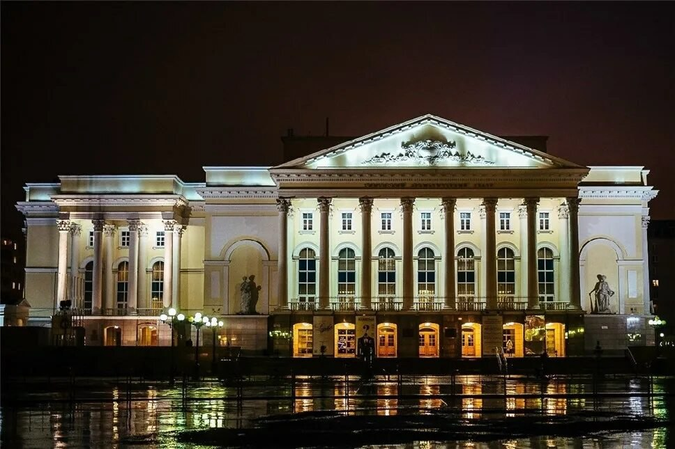
Старейший в Сибири (основан в 1858 г.) и крупнейший по площади драматический театр России. Расположен на площади 400-летия Тюмени в современном 5-этажном здании с колоннами. Имеет 4 сцены (Большая, Малая, «Молодость», АРТ-кафе), вмещающие >1000 зрителей
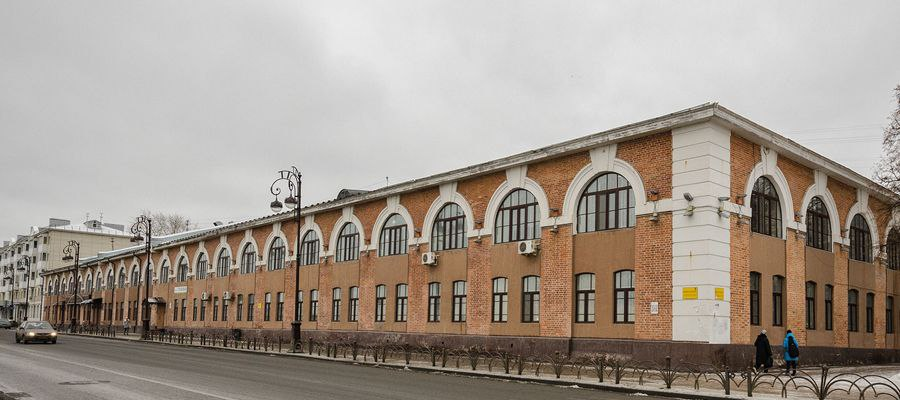
Купеческие особняки XIX–XX веков образуют каменную летопись города.
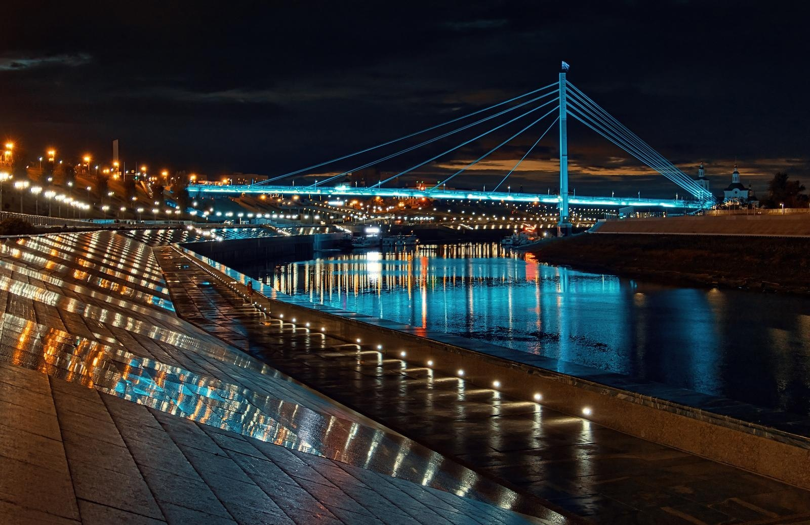
Единственная в России четырехуровневая гранитная набережная, построенная в историческом центре города. Это современная прогулочная зона длиной более 3 км с барельефами об истории Сибири, пешеходными мостами (включая «Мост Влюбленных») и подсветкой, ставшая визитной карточкой города..
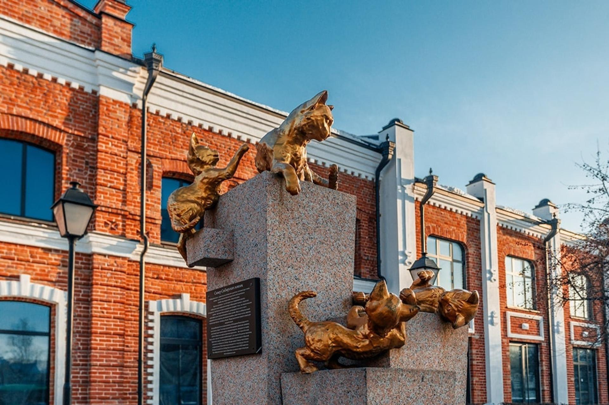
Уютная аллея (открыта в 2008 г.) на ул. Первомайской, посвященная подвигу тюменских кошек, отправленных в блокадный Ленинград для борьбы с крысами. В сквере установлены 12 чугунных золоченых скульптур кошек на гранитных постаментах, отлитых по эскизам Марины Альчибаевой.
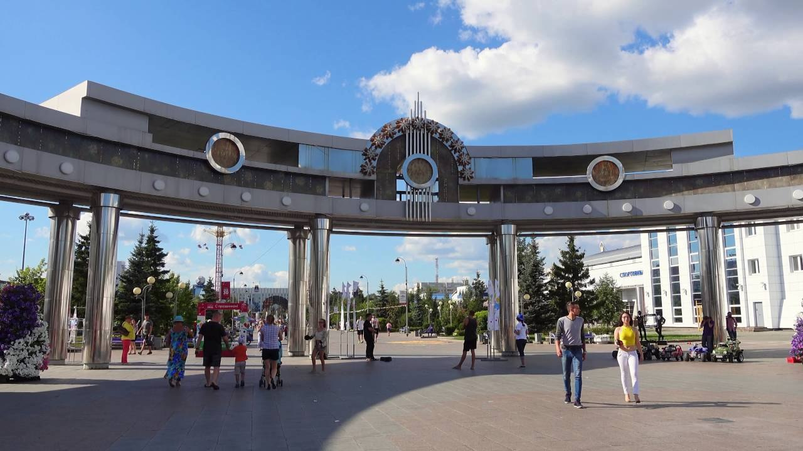
Главная пешеходная зона и центр отдыха в Тюмени, открытая в 2004 году. Это 800-метровый променад, объединяющий пять площадей с аттракционами, фонтаном «Времена года», скульптурами, цирком и уютными кафе.
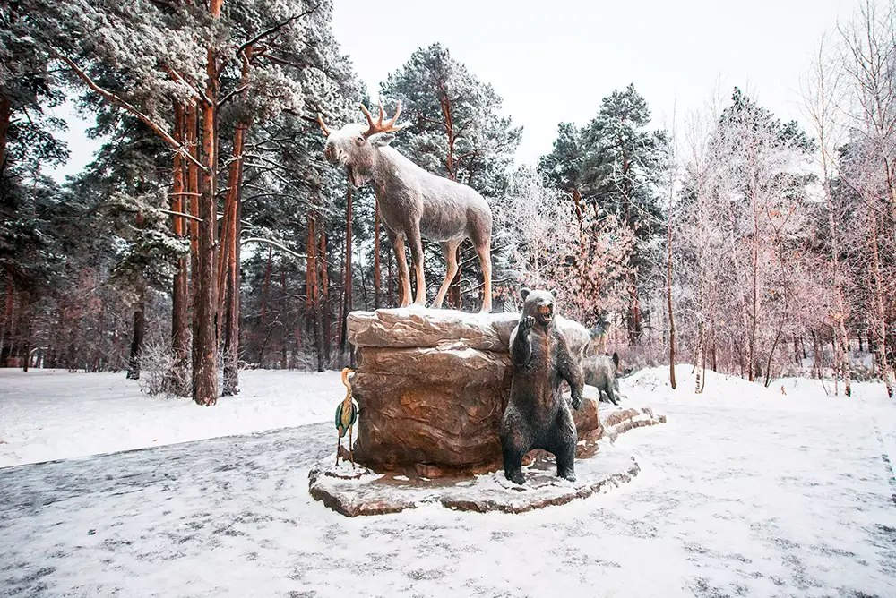
Популярный лесопарк в Тюмени (около 90 га) на берегу реки Войновки, благоустроенный для круглогодичного отдыха.
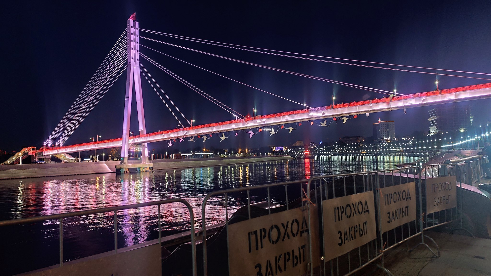
Пешеходный вантовый мост через реку Туру, ставший визитной карточкой и романтическим символом города. Он соединяет центральную часть города с заречным районом, известен эффектной ночной подсветкой и традицией молодоженов вешать «замки любви».
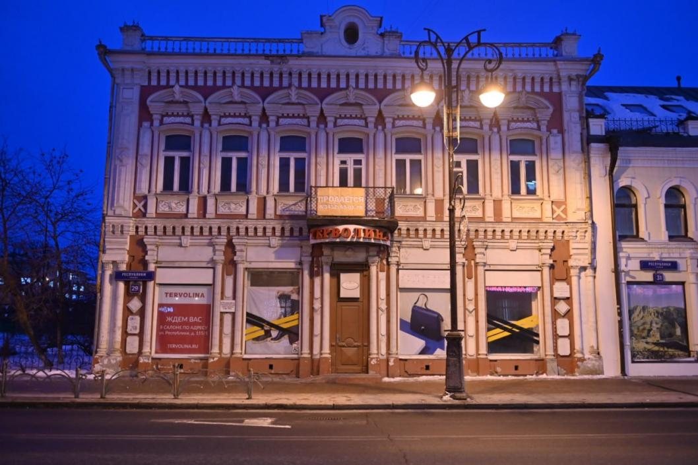
Двухэтажный каменный купеческий особняк 1907 года постройки в стиле неоренессанс. Памятник архитектуры, известный нарядным фасадом с лепниной и уникальными историческими элементами (своды Монье, стальные рольставни начала XX века)
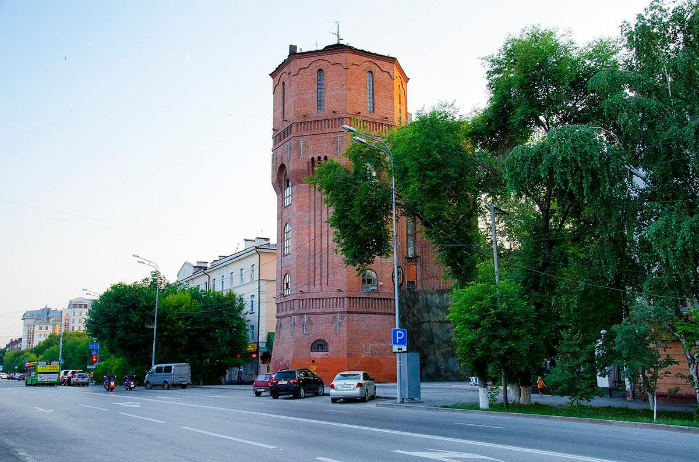
Водонапорная башня в Тюмени (ул. Орджоникидзе, 56/2) — это 25-метровый памятник промышленной архитектуры начала XX века (1914–1916 гг.) из красного кирпича. Восьмигранное здание в стиле «кирпичной готики» напоминает средневековый донжон. После реконструкции 2025 года в ней открыты Музей воды, молодежная резиденция и смотровая площадка. .
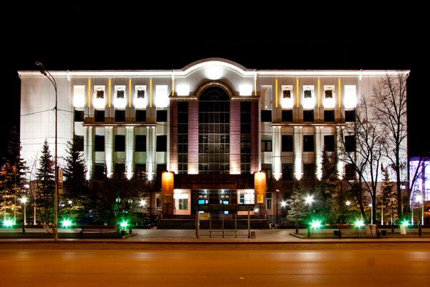
Крупнейший региональный информационный и культурный центр, расположенный в центре города (ул. Орджоникидзе, 59). В современном 6-этажном здании (после реконструкции 2009 г.) хранится около 2,9 млн документов.
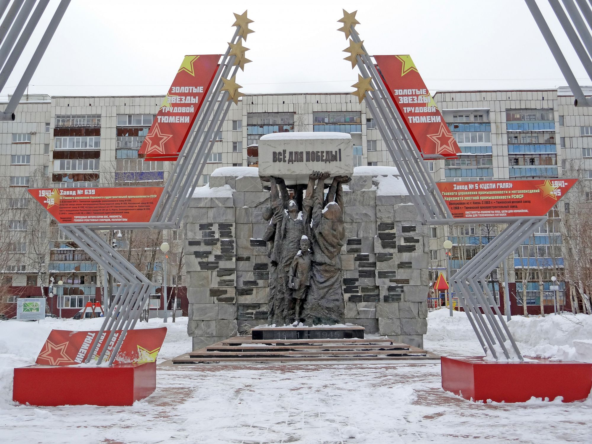
Бронзовая композиция, изображающая людей (женщину, подростка, инженера), которые на вытянутых руках держат строительный блок с надписью «Все для Победы!».
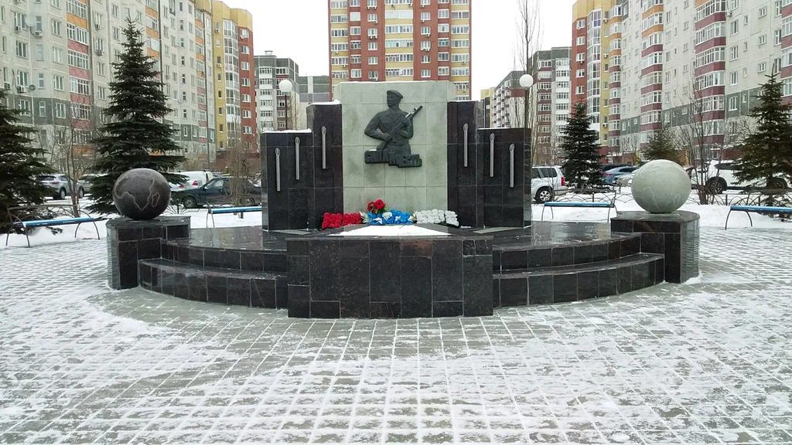
Тематическая зона отдыха, посвященная ВДВ. В центре — памятник-обелиск «Сила и честь», боевая машина десанта (БМД) и пушки. Оформлен в стилистике парашютов, включает места для отдыха, аллеи с деревьями и символику ВДВ.
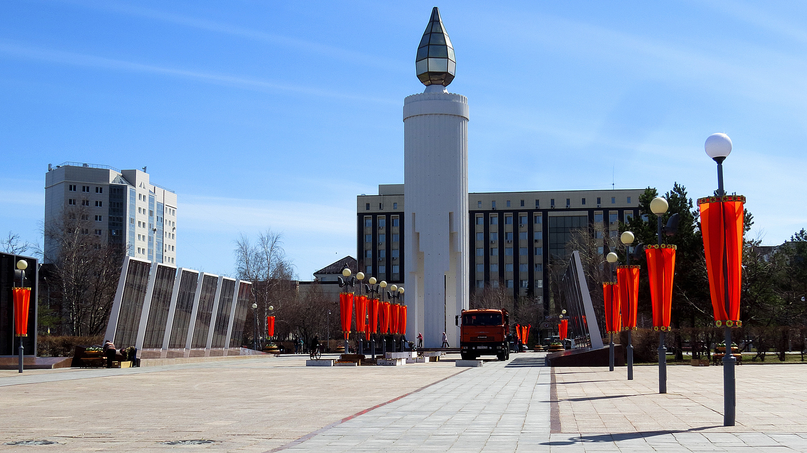
Мемориальный комплекс в Ленинском округе, посвященный воинам ВОВ, умершим в госпиталях города, и тюменцам, погибшим на фронте. Ключевые объекты: 29-метровая стела «Свеча», Вечный огонь, братская могила, «Стена памяти» с именами более 6000 погибших и выставка военной техники.
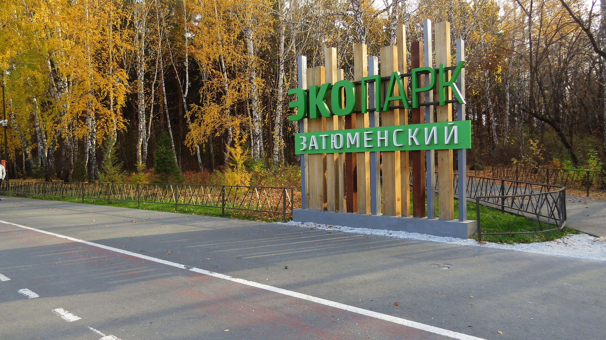
Популярная озелененная зона площадью более 77 га в Тюмени, сочетающая нетронутый лес (сосны, березы) с современной инфраструктурой для отдыха.
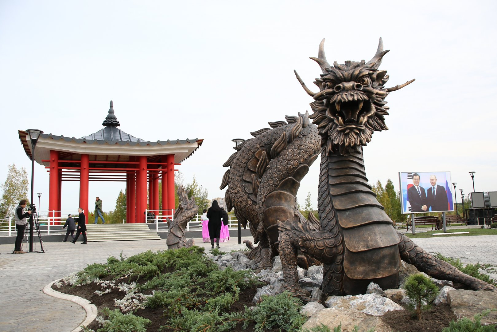
Уютная тематическая зона отдыха в заречной части Тюмени (у озера Алебашево), открытая в 2020 году в честь 30-летия дипотношений.
🏛 Каменная Тюмень: Драмтеатр → Дом Панкратьева → Улица Республики → Башня → Библиотека → Набережная
🕯 Город памяти: Сквер кошек → Площадь памяти → Памятник → Сквер десантников → Мост
🌳 Парки: Цветной бульвар → Набережная → Экопарк → Парк дружбы → Гилевская роща
🏛️ Музеи: Усадьба → Колокольниковых → Городская дума → Дом Машарова
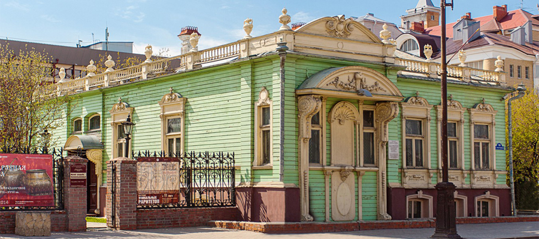
ул. Республики, 18. Единственная сохранившаяся в городе классическая купеческая усадьба конца XIX — начала XX вв. Она включает изысканный деревянный дом с резьбой и каменный торговый дом, предлагая посетителям погрузиться в атмосферу купеческого быта и истории торговли. .
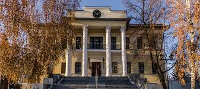
ул. Ленина, 2. Краеведческий музей в историческом здании XIX века, расположенный на Исторической площади..
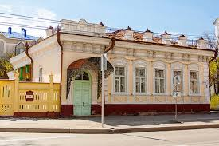
ул. Ленина, 24. Исторический особняк начала XX века в стиле неоклассицизма, принадлежавший промышленнику Н. Д. Машарову..
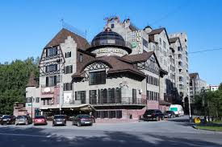
ул.Николая Федорова 9.Уникальный 4-звездочный бутик-отель, выполненный в стиле средневекового замка. Расположен в тихом районе, примерно в 10–15 минутах езды от центра города. Отель отличается именными дизайнерскими номерами, наличием термального комплекса, ресторана, собственной пекарни и летней террасы с видом на парк..
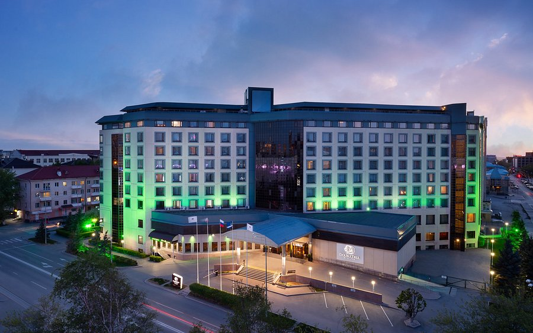
ул. Орджоникидзе, 46.Это современный четырехзвездочный отель, ориентированный как на бизнес-путешественников, так и на туристов.
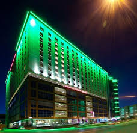
ул. 50 лет Октября, 14. Это современный международный отель французской сети Accor, интегрированный в состав многофункционального комплекса «Магеллан».
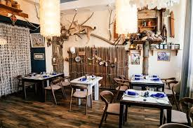
ул. Малыгина, 59.Заведение сочетает в себе ресторан и этнографический музей. Интерьер наполнен подлинными предметами быта северных народов (ханты, манси) и геологов-первопроходцев, привезенными из экспедиций.
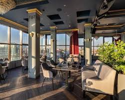
ул. Тимофея Чаркова, 81, корп. 2. Это аутентичное заведение, названное в честь знаменитого богемного квартала в Белграде. Ресторан специализируется на традиционной балканской кухне и славится своим гостеприимством.
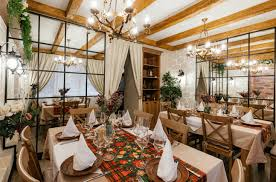
ул. 50 лет Октября, 3, корп. 1 Это гостеприимное заведение с по-домашнему уютной атмосферой, которое специализируется на традиционных рецептах Балканского полуострова.